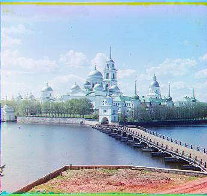

Project 1 - Owen Gozali
Images of the Russian Empire: Colorizing the Prokudin-Gorskii photo collection
Description
Sergei Mikhailovich Prokudin-Gorskii was a man well ahead of his time.
Convinced, as early as 1907, that color photography was the wave of the future, he won Tzar's
special permission to travel across the vast Russian Empire and take color photographs of everything he
saw including the only color portrait of Leo Tolstoy. And he really photographed everything: people, buildings,
landscapes, railroads, bridges... thousands of color pictures! His idea was simple: record three exposures of
every scene onto a glass plate using a red, a green, and a blue filter. Never mind that there was no way to
print color photographs until much later -- he envisioned special projectors to be installed in "multimedia"
classrooms all across Russia where the children would be able to learn about their vast country.
The goal of this project is to combine these black and white photos from the three filters using computer
vision techniques to create a unified colored image.
Approach
Cropping
The images come in a stack of three, one for each colored filter as shown here:

To separate these images, we did a simple partition into three equal parts by chopping the image into
three via height. Then we cropped the sides to reduce the area of the black bars on the sides.
Then we cropped the heigh a bit to remove the top and bottom borders.
Alignment
Alignment is done bying the image around a couple of pixels in all directions and score the
alignment of the aligned image against the source. This is done using an L2 Norm on the difference on the pixel
values of the images.
This alignment approach overall worked well for all the images except emir.tif (which will be explored more
in Bells and Whistles) however it took a long time for the bigger tif images. Taking upwards of 1-2 minutes
per picture.
Multiscaling
A solution to this is to make use of an image pyramid. The function is now called recursively on a lower
quality version of the image after being downsampled 2x. Then the same alignment algo is ran on the lowest
resolution to get a rough alignment. Then it returns the calculated optimal offsets and passes it up to the
next layer. The next layer uses the optimal offsets as a starting point and reevaluates it with small adjustments.
This greatly sped up processing of the tif images, processing them in as little as 20 seconds (~5x speedup).
Results
Here are the results of running the algorithm on the provided images:
cathedral.jpg
Red: (2, 5); Green: (3, 6)
church.jpg
Red: (0, 23); Green: (-4, -6)
emir.jpg
Red: (24, 45); Green: (44, -15)
harvesters.jpg
Red: (9, 45); Green: (9, 45)
icon.jpg
Red: (17, 40); Green: (23, 24)

lady.jpg
Red: (8, 45); Green: (10, 45)
melons.jpg
Red: (0, 45); Green: (0, 45)

monastery.jpg
Red: (2, -3); Green: (2, -3)
onion_church.jpg
Red: (27, 45); Green: (36, 42)
sculpture.jpg
Red: (-11, 33); Green: (-26, 45)
self_portrait.jpg
Red: (24, 0); Green: (37, 0)
three_generations.jpg
Red: (10, 45); Green: (9, 45)
tobolsk.jpg
Red: (3, 3); Green: (3, -1)
train.jpg
Red: (5, 44); Green: (32, 29)
Bells & Whistles